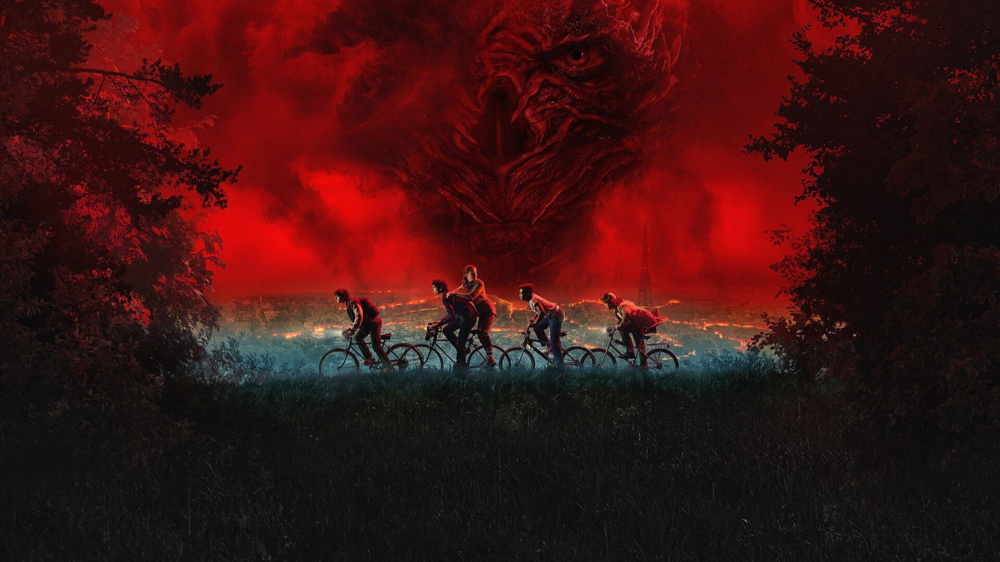
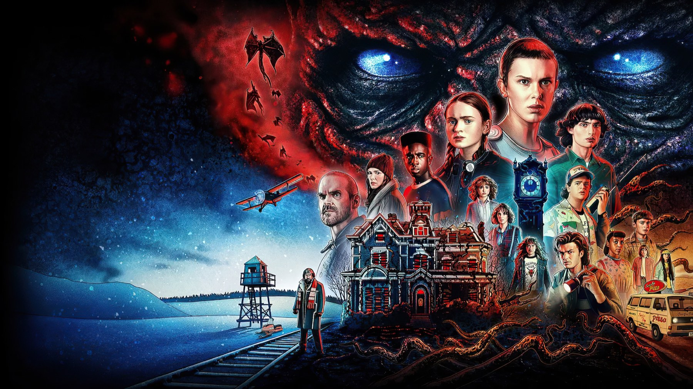

Stranger Things – Stagione 2
Un'ombra alta come una nuvola sopra un campo di zucche: il ritorno a Hawkins che scopre la coppia migliore della serie
Di solito un seguito sbaglia in due modi: rifà lo stesso film più in grande, oppure cambia tutto e perde quello che piaceva. Il secondo giro di Stranger Things corre entrambi i rischi, però se la cava quasi sempre, perché i Duffer hanno capito una cosa che nel 2016 ancora non sapevano, cioè che il cuore della serie non è il Sottosopra ma le coppie di personaggi che il pericolo costringe a stare insieme. Per noi è il capitolo in cui Hawkins diventa un posto abitato, invece che il semplice teatro di un mistero.
I fratelli Duffer l'hanno pensato apertamente come un secondo film, tanto che Netflix l'ha lanciato con il titolo Stranger Things 2. Quindi aspettatevi più personaggi e un nemico molto più grande, mentre la mitologia comincia ad allargarsi. Ma c'è anche un prezzo da pagare, perché in mezzo ai nove capitoli ce n'è uno che non avrebbe dovuto esistere.
Di cosa parla la seconda stagione di Stranger Things?
Hawkins, Indiana, autunno 1984. È passato quasi un anno da quando Will Byers è tornato a casa, ma il ragazzino continua ad avere visioni: per qualche secondo il mondo intorno a lui si spegne e torna il Sottosopra, con una presenza enorme che lo osserva dal cielo. Sua madre Joyce (Winona Ryder) adesso frequenta Bob Newby (Sean Astin), un uomo gentile e impacciato, mentre il laboratorio di Hawkins è passato nelle mani del dottor Sam Owens (Paul Reiser), che segue Will da vicino.
Intanto in classe compare Max Mayfield (Sadie Sink), trasferita dalla California insieme al fratellastro Billy (Dacre Montgomery), un ragazzo violento che porta in città una paura del tutto umana. Poi Dustin, frugando nel bidone della spazzatura, trova una specie di girino e lo chiama D'Artagnan, Dart per gli amici. Will, però, riconosce quella creatura, perché l'ha già vista nelle sue visioni.
La scena che vale la stagione
Arriva alla fine di «Capitolo tre: Il girino», diretto da Shawn Levy. Bob non sa niente del Sottosopra e crede che Will abbia solo degli incubi, perciò gli dà il consiglio di qualsiasi adulto di buon senso: quando il mostro arriva, non scappare, digli di andarsene. Poco dopo, in un campo di zucche, la visione torna. Allora sopra gli alberi si alza un'ombra enorme, piena di tentacoli. Will, minuscolo al centro dell'inquadratura, non si muove e le grida di andarsene.

Questa scena funziona perché rovescia l'esordio. Lì la luce era il filo con cui Joyce ritrovava il figlio; qui invece il consiglio più affettuoso del mondo diventa una trappola, e la serie non ha bisogno di dirlo a parole, perché basta la distanza tra il ragazzino e quella sagoma alta come una nuvola. Per la prima volta, inoltre, Stranger Things mostra un nemico più grande della città intera. E qui si capisce cosa voleva dire, per i Duffer, girare un seguito vero invece di una storia nuova: quell'ombra sopra Will è la conseguenza di quella scelta: il ragazzino salvato nel 1983 non è libero, e la serie sceglie di restare sulle sue ferite invece di voltare pagina. Noah Schnapp, che nel 2016 era rimasto quasi sempre fuori scena, adesso regge mezza stagione con il corpo e con lo sguardo.
L'altra scoperta è un'amicizia che nessuno si aspettava. Dustin, per ritrovare Dart, chiede aiuto a Steve Harrington (Joe Keery), che nella prima annata era solo il fidanzato antipatico di Nancy. Nel sesto capitolo, «La spia», i due finiscono a parlare di ragazze, e Steve, il ragazzo con la pettinatura più curata di Hawkins, smonta da solo il suo mito: «It's not about the hair, man», non è una questione di capelli, il segreto è fare finta che non ti importi. È un consiglio sbagliato detto con totale convinzione, e proprio per questo fa tenerezza. E c'è un retroscena che fa rivedere la scena con altri occhi: quella coppia non era nel progetto presentato a Netflix. Matt Duffer raccontò a Variety che i due nacquero mentre scrivevano, perché Steve era rimasto senza una storia interessante e Dustin senza compagni; nella prima stagione, poi, Steve sarebbe dovuto morire. Così il ragazzo più amato di Hawkins è stato salvato due volte, prima dalla morte e poi dalla noia. Da lì Steve si prende cura del gruppo come un fratello maggiore improvvisato, e per noi è il cambiamento più riuscito della serie: nasce qui, in una chiacchierata tra due ragazzi che nella prima annata non si erano quasi rivolti la parola.
La nostra sintesiIl secondo Stranger Things ha capito prima di tutti che il mostro serve ad avvicinare persone che non si sarebbero mai parlate.
Cosa non funziona
Il punto debole ha un titolo preciso, «Capitolo sette: La sorella perduta», diretto da Rebecca Thomas e scritto da Justin Doble. Undici lascia Hawkins e va a Chicago a cercare Kali (Linnea Berthelsen), un'altra ragazza passata dagli esperimenti del dottor Brenner, che vive con una banda di punk e sa far vedere alla gente ciò che vuole. Il guaio è il momento: la fuga arriva proprio mentre a Hawkins tutto precipita, così per quarantasei minuti la tensione accumulata si ferma.
Kali, poi, resta un personaggio abbozzato. Per presentarsi a Undici fa comparire una farfalla che cambia colore e le spiega che può far vedere, o non vedere, quello che vuole; ma oltre al trucco c'è poco, e la sua banda di punk sembra uscita da un videoclip più che da Chicago nel 1984. Anche la critica americana, infatti, lo considerò il punto più basso dell'annata. E anche se i Duffer l'hanno riportata nella quinta stagione, il giudizio su quella puntata per noi non cambia.
C'è poi Billy, che come minaccia umana funziona poco, perché è scritto quasi solo con la rabbia e per buona parte del racconto non ha una storia sua. La serie lo capirà più avanti; qui, invece, sembra un personaggio di passaggio.
La seconda stagione rispetto alle altre

Il confronto naturale è con l'esordio. Nel 2016 la serie si chiedeva soltanto dove fosse finito Will e ci girava intorno senza disperdersi. Nel 2017 le domande diventano almeno quattro e reggono con fatica, ma in cambio nascono le amicizie che faranno da spina dorsale agli anni successivi. Steve accanto a Dustin, Max dentro il gruppo dei ragazzi: le annate finali useranno questo materiale con budget da cinema, eppure lo trovano già pronto qui, in nove puntate girate quasi tutte tra Atlanta e il resto della Georgia.
La critica se ne accorse subito. Su Rotten Tomatoes il 94% delle recensioni fu positivo, su Metacritic il voto medio arrivò a 78 su 100, e agli Emmy del 2018 le candidature furono 12, compresa quella per la miglior serie drammatica, con la vittoria per il montaggio sonoro. A serie conclusa, il 4 gennaio 2026, Marco Fanciuso su Everyeye l'ha messa al terzo posto fra le cinque stagioni, definendola «spesso sottovalutata»: siamo d'accordo con lui, anzi noi la mettiamo un gradino più su.
A chi la consigliamo, e a chi no
La consigliamo a chi ha amato l'esordio e teme il solito seguito gonfiato, perché questo lo è solo in parte: le prime sei puntate valgono il viaggio, a cominciare dalla notte di Halloween. Ma anche a chi ricorda Steve come il ragazzo popolare con i capelli perfetti, dato che qui cambia faccia. Se invece cercate una storia chiusa come quella del primo anno, resterete delusi, perché la mitologia si apre e lascia fili sospesi. Quanto ai più piccoli, vale l'avvertenza di sempre, anzi qualcosa di più: alcune scene con le creature nel buio sono più dure di quelle del 2016. Tutte le stagioni sono disponibili su Netflix.
La seconda stagione di Stranger Things allarga Hawkins senza perderla: un nemico alto come il cielo, l'amicizia tra Steve e Dustin, una prova notevole di Noah Schnapp. Da saltare c'è solo la puntata di Chicago.
Domande frequenti
Quanti episodi ha la seconda stagione di Stranger Things?
Nove episodi, pubblicati tutti insieme su Netflix il 27 ottobre 2017. In italiano vanno da «Capitolo uno: Mad Max» a «Capitolo nove: La porta».
In che anno si svolgono i nuovi episodi?
Nell'autunno del 1984, circa un anno dopo la scomparsa e il ritrovamento di Will Byers, con la notte di Halloween nelle prime puntate.
Dove vedere la seconda stagione di Stranger Things?
La serie completa, dal 2016 al finale del 2025, è disponibile in abbonamento su Netflix.
Fonti consultate (9)
- Wikipedia – Stranger Things season 2
- Wikipedia – Episodi di Stranger Things (seconda stagione)
- Wikipedia – Chapter Three: The Pollywog
- Wikipedia – Chapter Seven: The Lost Sister
- Wikipedia – Steve Harrington
- TVLine – Stranger Things' original pitch didn't include the show's best duo
- Wikiquote – Stranger Things, seconda stagione
- Everyeye – Stranger Things, tutte le stagioni dalla peggiore alla migliore (Marco Fanciuso)
- TMDB – scheda e dove vederlo in Italia